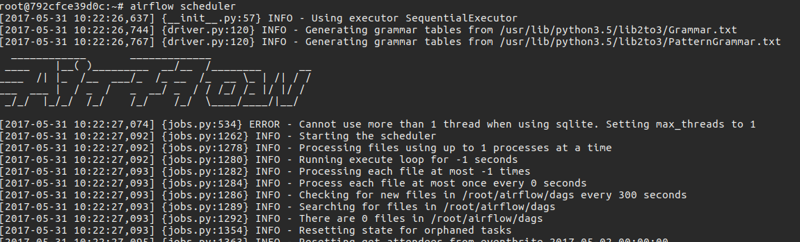
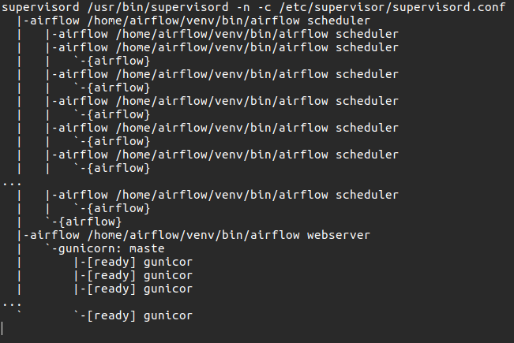
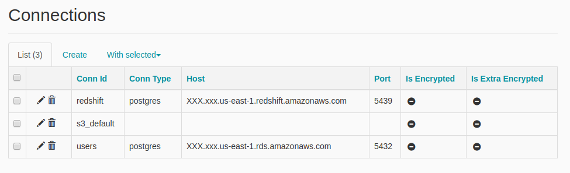

(continuing from a previous article)
Scheduler
Airflow is made up of mainly two components: webserver and scheduler. The webserver is the main way to interact with Airflow, although some commands can be issued from the command line, such as setting variables or connection credentials. The scheduler is the component that is in charge of executing whatever needs to be executed at a specific time and using a configurable strategy.

When creating DAGs, you specify an interval (daily/hourly/etc) and in doing so the scheduler knows that a DagRun need to be created at a specific recurring time. DagRuns are a database model and they represent a run of a DAG at a set execution date. For instance, if we generate a report every day, at midnight of each day a new DagRun is created. These will then get collected by a scheduler “executor” for execution. In addition to this, a DagRun can be created by manually triggering a Dag, with the command trigger_dag available from the command line.
In the previous post it was mentioned that DAG are composed by many Tasks. In a parallel way, DagRuns, during execution, get connected to many TaskInstances, which represent the execution of a specific task in the context of a Dag run at a specific time. Task instances have several data points that are saved in the Airflow database, therefore can be analyzed afterwards for spotting problems with task duration, launch time, execution environment, etc. Every instance also has all log information coming from executing its code written to a log file automatically managed by Airflow.
The normal behaviour of Dag execution is that tasks are executed in a dependency order and only in case the previous task has terminated successfully. This behaviour can be changed to activate regardless of exit status or only in case of failure of the previous task. I never had to change this. If you think you should add an error triggering task, be aware that Airflow comes with its own error reporting facilities, although quite basic. Dependencies between tasks can be declared in both ways, as in “is-dependent-from” and “depends-on”. Airflow will automatically make the correct graph out of this and traverse it accordingly.
Executors
The actual execution of the task happens somewhat separately from the scheduler process. There are 3 strategies included in Airflow: local, sequential, Celery and Mesos executor. Sequential is the default and good for development, but it will not get you far. Local executor is the one I have seen used the most, and it is based on a pre-fork model: a number of workers are forked from the main scheduler and polling from an IPC queue tasks to run. When a task is taken from the queue, another fork happens and a new process is wrapping the actual execution of the task. There are no external dependencies needed here, and it scales up well until all resources on the server are used.

If you want to scale out to multiple servers, you can use the Celery executor. Celery executor uses Celery (and a messaging queue server) to distribute the load on a pool of workers. It is quite a common pattern used in the Django/RoR world. This is a more complex setup, and it requires the code to be in sync with all machines.
Retries and Idempotency
An important concept is idempotency: any task could be executed potentially any number of time (although ideally not many more than one), therefore it is important that this is taken into account, either by bringing it to a known state every time it starts or some other specific way. If you are not familiar with the term, it is a term that is frequently used in messaging systems, where at-least-once delivery is common. Most background jobs queue implement this.
If for any reason the task that is being run fails, Airflow, if configured to do so, will try to re-run it after a time delay. This behaviour is helpful in case systems are temporarily unavailable. The number of retries can be configured at DAG-level and at Task-level. Once all the possible runs have been exhausted and the system continuously failed, the task is marked as failed and, depending on the DAG configuration, the whole DAG may be marked as failed.
Miscellaneous
Worth mentioning are the Hooks (Connections in the UI) and Variables. This is a non-core but quite useful part of Airflow. It allows you to manage all connection details and configuration variables of your DAGs and your scripts directly from the Airflow Web UI. Given that all this data is read at runtime, it is quite convenient if you need to update these without restarting Airflow and all its running processes with it. Besides this, they do not offer anything more that you would not get by deploying a configuration file.

One last thing is XCom. The architecture of Airflow is built in a way that tasks have complete separation from any other tasks in the same DAG. The only truth that you can assert is that all tasks that the current task depends on are guaranteed to be executed. Besides that, there is no implicit way to pass dynamic data between tasks at execution time of the DAG. If you want to do so, you need to use XCom. XCom is a simple key/value store API that uses the Airflow DB, and it’s available for querying when a task is being executed. It is generally helpful if, for instance, you generate temporary files/dirs and you want the following tasks to use the dynamically generated file paths.